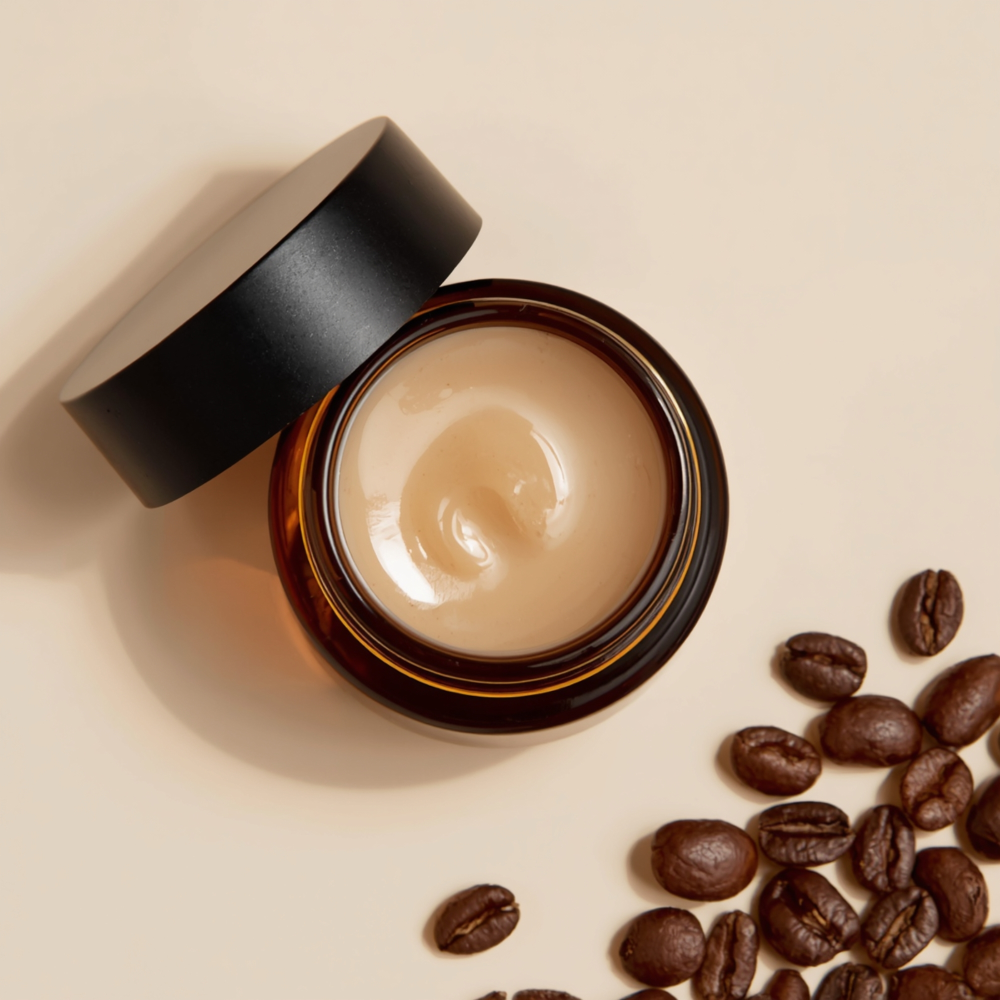
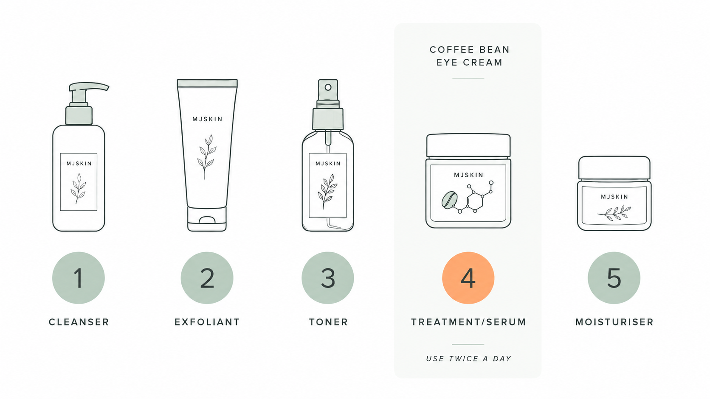
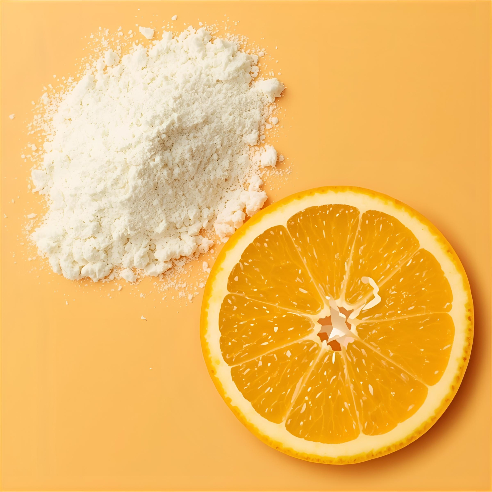
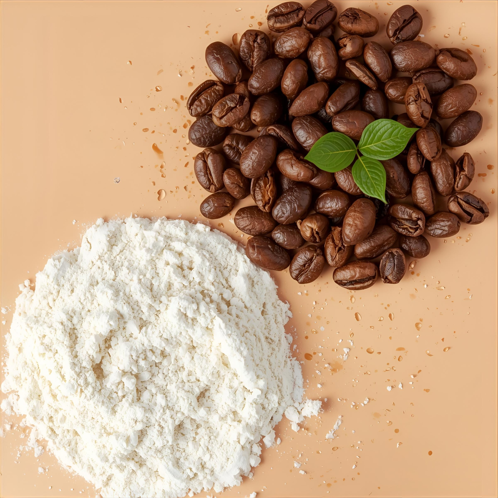
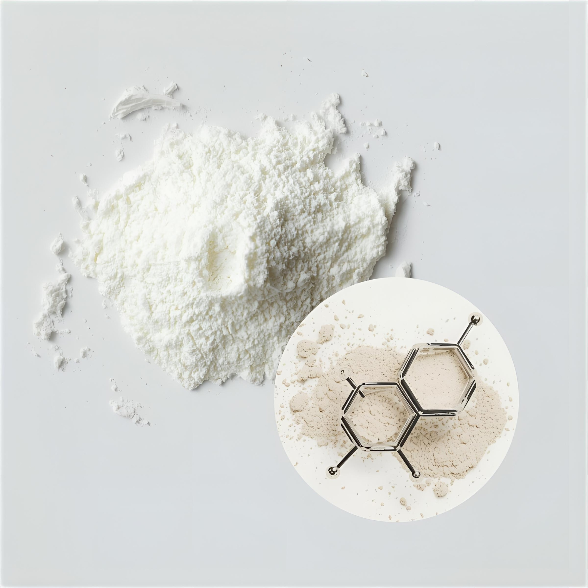
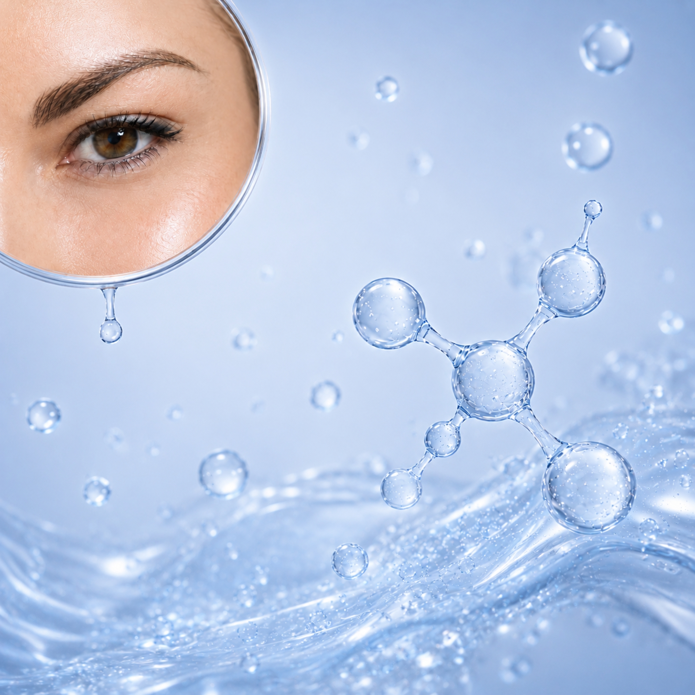

A light, fast-absorbing cream for the skin around the eyes. Hydrates and softens the look of dark circles, puffiness, and fine lines.

A light, fast-absorbing cream for the skin around the eyes. Hydrates and softens the look of dark circles, puffiness, and fine lines.
100% natural. COSMOS-aligned ingredients. No synthetic fragrances. Best for all skin types — especially dry and maturing skin. Lightweight, non-greasy finish.
Daily, AM and PM.

Apply a small amount to the skin around the eyes. Allow to absorb before SPF or makeup. Always patch test first.
Pro-Tips
Store in a cool, dry place away from direct sunlight. Best used within 6 months of opening.
Aqua (Water), C13-15 Alkane, Cetearyl Olivate, Olea Europaea (Olive) Fruit Oil, Glycerin, Sorbitan Olivate, Coffea Arabica (Coffee) Seed Oil, Cetyl Alcohol, Simmondsia Chinensis (Jojoba) Seed Oil, Butyrospermum Parkii (Shea) Butter, Sodium Ascorbyl Phosphate, Cucumis Sativus (Cucumber) Seed Oil, Rosa Rubiginosa (Rosehip) Seed Oil, Benzyl Alcohol, Dehydroacetic Acid, Niacinamide, Caffeine, Sodium Hyaluronate, Citrus Aurantium Dulcis (Orange) Peel Oil Expressed, Tocopherol, Aloe Barbadensis Leaf Juice Powder, Sodium Gluconate, Potassium Sorbate, Xanthan Gum, Tocopheryl Acetate.
100% natural. COSMOS-aligned. No synthetic fragrances.
Formulated with 100% natural, COSMOS-aligned ingredients and no synthetic fragrances — designed to be gentle for the delicate eye area. As with any new product, patch test first.
Yes — its lightweight, non-greasy texture absorbs quickly and works well as a base under concealer or eye makeup. Allow it to fully absorb before applying SPF or makeup.
Caffeine helps constrict blood vessels for an immediate de-puffing effect. Niacinamide and Vitamin C work over time to even tone and brighten the appearance of pigmented or shadowed areas. Best results come from consistent twice-daily use.
Yes. No retinoids, no salicylic acid, no synthetic fragrance — formulated to be appropriate during pregnancy and breastfeeding under current obstetric dermatology guidance.
Around 3 months at twice-daily use. A small amount goes a long way — you only need a rice-grain-sized dot per eye.
Four hero ingredients. One light formula.

Sodium Ascorbyl Glucoside
Antioxidant that brightens skin, stimulates collagen production, and helps even out skin tone.

Caffeine Powder 99% Pure
Caffeine helps reduce the look of puffiness after application (temporary effect).

Vitamin B3
Supports hyperpigmentation for a more even skin tone.

High Molecular Weight HMW
Hyaluronic acid + glycerin bind water for lasting surface hydration, plumping skin and providing intense hydration.